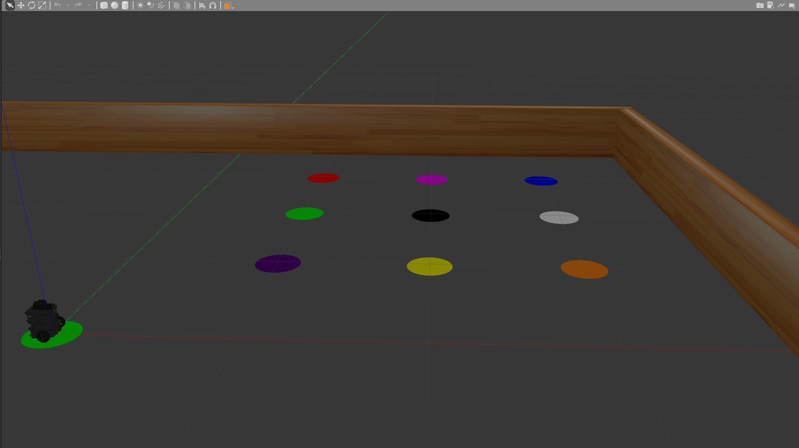

Optimal travel path to multiple destinations

This simulation is akin to the classical travelling salesman problem. The task is to visit each node, while minimizing total travel distance. The simulation is inspired by [1] whereby dynamic programming is used to solve, and [2] where reinforcement learning is used to solve a tsp problem.
In this task Q-learning is used to solve an N-node(number of destinations) with graph embedding to represent the graph structure of visited nodes and paths. The system has no knowledge of the mathematics used in travelling salesman problems,
or heuristics such as [3] where Concorde is used.
It is solely dependent on training knowledge from sequences of multiple traversal of the paths.
Rewards are given cumulated sequences, as the agent tries to minimize the total accumulated distance.
Task
There are 10 nodes in total with indices [ 0 - 9]
Above shows the distance matrix and internode connections.
The nodes are also color coded 0:green 1:black, 2:orange, 3:white, 4:yellow, 5:purple, 6:blue, 7:green, 8:green, 9:red
Training result
The system is trained using pytorch framework. Once training ceases, the turtlebot is given actions to move to the desired nodes by the action server.
After 4000 iterations a minimal distance of 4.344m is obtained. The optimal path is [8, 2, 0, 7, 4, 5, 6, 3, 9] which covers each node, i.e each node is visited only once.
References
[1]: https://www.youtube.com/watch?v=XDw03aM6FeQ&t=2985s
[2]: https://medium.com/unit8-machine-learning-publication/routing-traveling-salesmen-on-random-graphs-using-reinforcement-learning-in-pytorch-7378e4814980
[3]: http://www.math.uwaterloo.ca/tsp/concorde/index.html